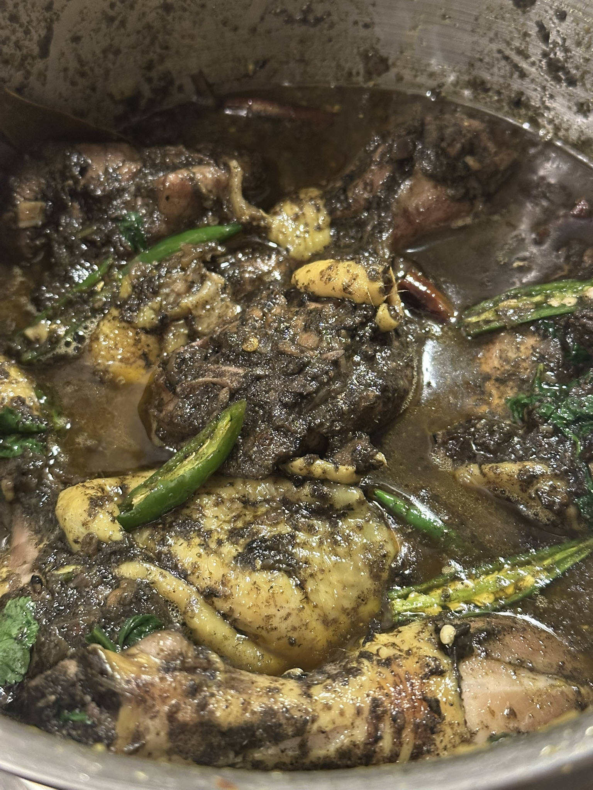
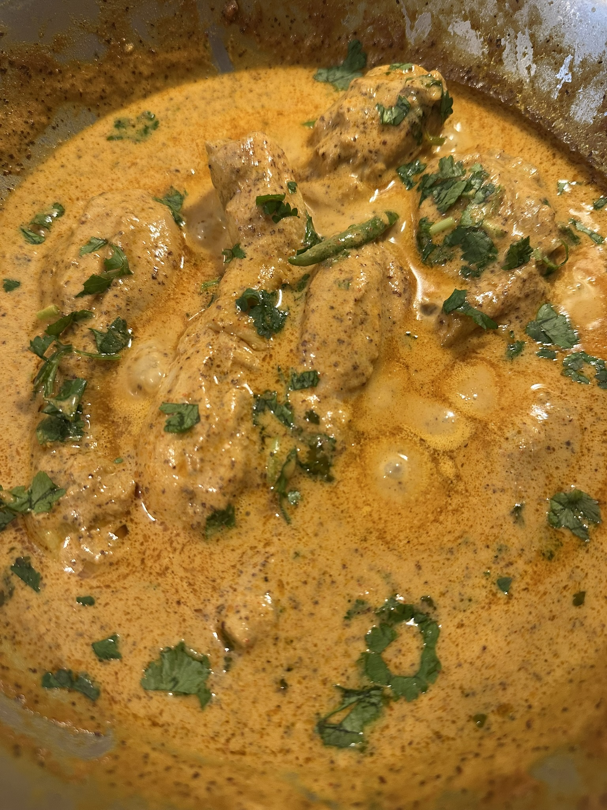
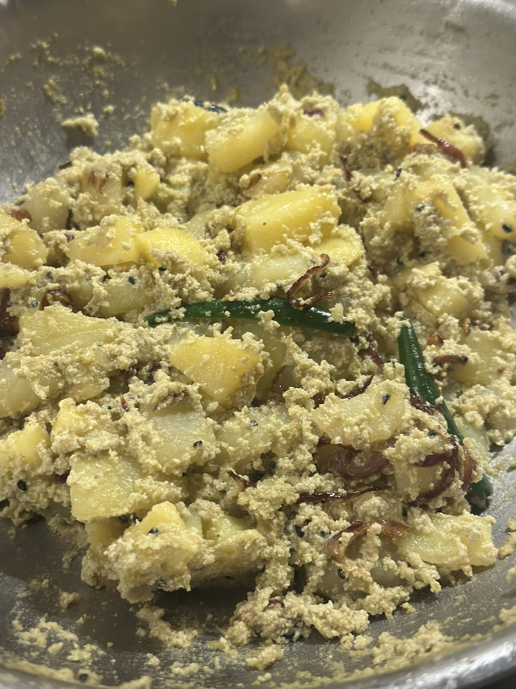

Cooking.
"One cannot think well, love well, sleep well, if one has not dined well." — Virginia Woolf
I always had an interest in cooking, but it was moving away from home that turned it into something real. Back in Kolkata, I didn't get to experiment much in the kitchen. Living on my own in Geneva, and later in Zürich, meant figuring things out from scratch. I think I get that from my mom, who is an excellent cook herself. It took some distance to realise how much of it I'd absorbed just by being around her.
Indian food is where I'm most comfortable, and Bengali cooking is what I keep coming back to. Getting a familiar dish right when you're far from home is its own kind of reward. Beyond Indian food, I experiment with Asian, Mexican, and Italian cooking, with varying degrees of success and no shortage of enthusiasm. Restaurants in Switzerland are expensive, so that helps with motivation.
Cooking is a daily thing for me, but weekends are when it gets more interesting, when there's time to try something new or cook something that takes a while. It's also the easiest way to get friends around a table, which I'll always prefer over eating out.

Black sesame chicken, an Assamese dish

Traditionally mutton, this one made with chicken

Mustard chicken, a Bengali classic

Potatoes in poppy seed paste, comfort food from home